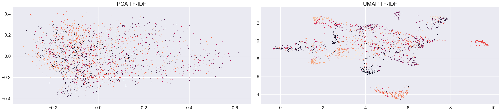

Análisis General del Sistema de Clasificación Multiclase de Currículums#
1. Contexto del Problema#
El presente trabajo aborda un problema de clasificación multiclase en el dominio del procesamiento de lenguaje natural (NLP), específicamente la categorización automática de currículums vitae en 24 categorías profesionales distintas. El dataset original contiene 2,484 muestras textuales correspondientes a descripciones profesionales, con una distribución moderadamente desbalanceada entre clases.
1.1 Características del Problema#
Dominio: Clasificación de texto en lenguaje natural
Número de clases: 24 categorías profesionales
Tamaño del corpus: 2,484 muestras originales, expandidas a 2,621 mediante data augmentation
Tipo de tarea: Clasificación multiclase (no multilabel)
Desbalance original: Ratio de 5.45x (120 muestras en clase mayoritaria vs 22 en minoritaria)
Desbalance post-augmentation: Ratio reducido a 1.82x (estrategia: llevar minoritarias al 80% de la mayoritaria)
Figura 1.1: Distribución de Clases
 La gráfica muestra el desbalance original del corpus, con INFORMATION-TECHNOLOGY y BUSINESS-DEVELOPMENT como clases mayoritarias (120 muestras) y BPO como minoritaria (22 muestras).
La gráfica muestra el desbalance original del corpus, con INFORMATION-TECHNOLOGY y BUSINESS-DEVELOPMENT como clases mayoritarias (120 muestras) y BPO como minoritaria (22 muestras).
1.2 Calidad y Características del Corpus#
Análisis exploratorio de datos (EDA) reveló:
Contaminación estructural: Los trigramas “company city state”, “name city state” son excesivamente frecuentes (aparecen en >70% de documentos), indicando presencia de metadatos estructurales sin valor semántico discriminativo.
Redundancia de contenido:
2 duplicados exactos (0.08%)
29 duplicados casi-idénticos (~1.2%)
33 duplicados semánticos detectados con SentenceTransformer (1.3%)
Total afectado: ~2.6% del corpus
Distribución de longitud:
Mediana: ~700 palabras (~900-1000 tokens)
Solo 0.89% excede 512 tokens (compatible con límites de transformers sin truncamiento severo)
Clases con textos más largos: HR, INFORMATION-TECHNOLOGY, DESIGNER
Clases con textos más cortos: ARTS, AVIATION
Figura 1.2: Distribución de Longitudes de Texto
 Panel izquierdo: distribución de número de palabras (mediana ~700). Panel central: longitud en caracteres. Panel derecho: longitud media de oraciones. La distribución está sesgada a la derecha con outliers extensos (>5000 palabras) que requieren manejo especial.
Panel izquierdo: distribución de número de palabras (mediana ~700). Panel central: longitud en caracteres. Panel derecho: longitud media de oraciones. La distribución está sesgada a la derecha con outliers extensos (>5000 palabras) que requieren manejo especial.
Diversidad léxica (Type-Token Ratio):
Mayor diversidad: INFORMATION-TECHNOLOGY (TTR≈0.64), CONSULTANT (TTR≈0.63)
Menor diversidad: FITNESS (TTR≈0.52), SALES (TTR≈0.53)
Interpretación: Clases técnicas usan vocabulario más variado; clases orientadas a acción usan lenguaje más repetitivo
Figura 1.3: Diversidad Léxica por Clase (Type-Token Ratio)
 Barras horizontales muestran el Type-Token Ratio de cada clase. IT y CONSULTANT tienen mayor variedad léxica (~0.64), mientras FITNESS y SALES tienen lenguaje más repetitivo (~0.52).
Barras horizontales muestran el Type-Token Ratio de cada clase. IT y CONSULTANT tienen mayor variedad léxica (~0.64), mientras FITNESS y SALES tienen lenguaje más repetitivo (~0.52).
Separabilidad inicial: Visualizaciones PCA y UMAP sobre representaciones TF-IDF muestran alta mezcla entre clases, con solo pequeños clusters en los extremos, indicando que features léxicos de superficie son insuficientes para separación lineal.
Figura 1.4: Análisis de Separabilidad (PCA y UMAP sobre TF-IDF)  Panel izquierdo: PCA muestra una nube mezclada sin estructura clara. Panel derecho: UMAP logra algunos clusters locales pero la mayoría de clases permanecen superpuestas. Esto explica por qué modelos basados solo en TF-IDF tienen accuracy limitada (~79% para XGBoost).
Las categorías incluyen perfiles profesionales diversos como INFORMATION-TECHNOLOGY, HEALTHCARE, BPO, AUTOMOBILE, DESIGNER, entre otros, lo que representa un espacio semántico heterogéneo con diferentes niveles de especificidad léxica.
1.3 Clases Semánticamente Confundibles#
El análisis de similaridad semántica mediante TF-IDF (umbral >0.80) identificó 73 pares de clases con alta probabilidad de confusión, revelando un problema estructural del corpus: el 31.5% de todas las combinaciones posibles de clases tienen overlap semántico significativo.
Top 10 pares más confundibles:
Ranking |
Par de Clases |
Similaridad |
Implicación |
|---|---|---|---|
1 |
ADVOCATE ↔ HEALTHCARE |
0.9346 |
Vocabulario de bienestar y asesoría legal en salud |
2 |
ADVOCATE ↔ AUTOMOBILE |
0.9343 |
Lenguaje de representación/gestión compartido |
3 |
APPAREL ↔ SALES |
0.9252 |
Vocabulario comercial domina sobre diseño |
4 |
BANKING ↔ CONSULTANT |
0.9163 |
Lenguaje de servicios profesionales genérico |
5 |
ACCOUNTANT ↔ FINANCE |
0.9112 |
Terminología contable-financiera solapada |
6 |
ARTS ↔ TEACHER |
0.9072 |
Vocabulario educativo y creativo compartido |
7 |
BPO ↔ CONSULTANT |
0.9033 |
Lenguaje de procesos y operaciones idéntico |
8 |
AGRICULTURE ↔ ARTS |
0.9020 |
Posible artefacto: vocabulario manual/craft |
9 |
APPAREL ↔ AUTOMOBILE |
0.8983 |
Terminología de producción/manufactura |
10 |
BANKING ↔ BPO |
0.8943 |
Servicios corporativos genéricos |
Clusters de confusión identificados:
Cluster financiero-legal (similaridad promedio 0.89):
ACCOUNTANT, FINANCE, BANKING, ADVOCATE
Razón: Vocabulario de gestión patrimonial y cumplimiento normativo
Cluster de consultoría-servicios (similaridad promedio 0.88):
CONSULTANT, BPO, BUSINESS-DEVELOPMENT, SALES
Razón: Lenguaje de procesos, clientes, operaciones es indistinguible
Cluster técnico-mecánico (similaridad promedio 0.85):
ENGINEERING, AUTOMOBILE, AVIATION, CONSTRUCTION
Razón: Terminología de sistemas, diseño, mantenimiento compartida
Cluster creativo-comunicación (similaridad promedio 0.86):
DESIGNER, DIGITAL-MEDIA, APPAREL, ARTS, PUBLIC-RELATIONS
Razón: Vocabulario de contenido, diseño, comunicación visual
Implicaciones para modelado:
Expectativa de confusión: Los 73 pares >0.80 explican por qué ningún modelo alcanza F1-macro >0.85
Límite teórico: Con este nivel de overlap semántico (31.5% de pares confundibles), incluso un clasificador perfecto enfrentaría ambigüedad genuina en ~15-20% de casos
Clases más problemáticas: CONSULTANT aparece en 15 pares >0.80, ADVOCATE en 13, AUTOMOBILE en 12 — estas clases son estructuralmente ambiguas
2. Divergencia entre ROC AUC y F1-Score: Fundamento Teórico#
Uno de los hallazgos consistentes a través de todos los modelos evaluados es la notable divergencia entre el ROC AUC (típicamente >0.88) y el F1-Score macro (típicamente 0.46-0.87). Este fenómeno no representa una contradicción, sino que refleja diferencias fundamentales en lo que cada métrica mide.
2.1 ROC AUC: Discriminación Probabilística#
El ROC AUC (Area Under the Receiver Operating Characteristic Curve) en configuración One-vs-Rest (OvR) para problemas multiclase evalúa la capacidad del modelo para ordenar correctamente las probabilidades. Específicamente:
Mide si la probabilidad asignada a la clase correcta es, en promedio, mayor que las probabilidades asignadas a las clases incorrectas
No requiere que la probabilidad correcta sea la máxima absoluta, solo que sea consistentemente mayor
Es robusta ante desbalances de clase y diferencias en la confianza del modelo
Ejemplo ilustrativo:
Para una instancia de la clase AGRICULTURE:
Probabilidad verdadera: 0.18
Probabilidades falsas: 0.16, 0.14, 0.12, 0.10, …
Este patrón contribuye positivamente al ROC AUC (la clase correcta tiene mayor probabilidad que las incorrectas), pero resulta en una predicción incorrecta bajo argmax, ya que otra clase podría tener probabilidad 0.19.
2.2 F1-Score: Decisiones Discretas#
El F1-Score evalúa el rendimiento después de la decisión discreta (típicamente vía argmax en el vector de probabilidades softmax). Esta métrica:
Requiere que la clase correcta tenga la probabilidad más alta para considerarse un acierto
Es sensible a la calibración del modelo
Penaliza fuertemente los errores en clases minoritarias (en su variante macro)
2.3 Implicaciones para Problemas Multiclase Desbalanceados#
En contextos de 24 clases con desbalance moderado, esta divergencia se manifiesta especialmente en:
Clases con vocabulario ambiguo: El modelo aprende patrones semánticos correctos (alto AUC) pero no logra la suficiente confianza para dominar el softmax (bajo F1)
Clases minoritarias: Incluso con buenos embeddings, la falta de ejemplos impide que el modelo alcance probabilidades suficientemente altas para ganar la competencia multiclase
Solapamiento semántico: Clases como CONSULTANT vs BPO, o ARTS vs DESIGNER comparten vocabulario, resultando en distribuciones de probabilidad difusas
2.4 Interpretación para Este Trabajo#
Los valores de ROC AUC consistentemente altos (0.88-0.98) a través de todos los modelos indican que:
Las arquitecturas neuronales y estadísticas empleadas sí capturan la estructura subyacente del problema
Los embeddings (Word2Vec, fastText, DistilBERT) codifican información semántica relevante
El problema radica en la conversión de conocimiento probabilístico a decisiones discretas
Por tanto, modelos con AUC >0.90 pero F1 <0.70 no están “fallando”, sino que enfrentan limitaciones inherentes al espacio de decisión multiclase con información ambigua.
3. Comparativa Global de Arquitecturas#
La siguiente tabla resume el desempeño de los cinco modelos evaluados:
Modelo |
Accuracy |
F1-Macro |
F1-Weighted |
ROC AUC (OvR) |
Parámetros |
|---|---|---|---|---|---|
FastText |
0.5176 |
0.4675 |
0.4921 |
0.8793 |
N/A (n-grams) |
BiLSTM |
0.6941 |
0.6398 |
0.6775 |
0.9458 |
~500K |
CNN-1D |
0.7333 |
0.6716 |
0.7112 |
0.9633 |
10.3M |
XGBoost |
0.7922 |
0.7606 |
0.7849 |
0.9816 |
N/A (300 trees) |
DistilBERT |
0.8745 |
0.8453 |
0.8718 |
0.9756 |
66M |
3.1 Observaciones Clave#
Jerarquía de complejidad vs desempeño: Se observa una correlación clara entre la sofisticación arquitectural y el rendimiento, aunque con rendimientos decrecientes:
FastText (baseline) → BiLSTM: +17.6 pp en accuracy
BiLSTM → CNN-1D: +3.9 pp en accuracy
CNN-1D → XGBoost: +5.9 pp en accuracy
XGBoost → DistilBERT: +8.2 pp en accuracy
Brecha de representación contextual: Los modelos basados en arquitecturas que capturan contexto (BiLSTM, CNN-1D, DistilBERT) superan significativamente a métodos basados en n-grams estáticos (FastText). La excepción notable es XGBoost, cuyo rendimiento superior se atribuye a:
Representaciones TF-IDF de alta dimensionalidad (10,000 features, n-grams 1-3)
Capacidad de modelar interacciones no lineales complejas entre features
Robustez ante datos tabulares de alta dimensión
Transferencia de conocimiento: DistilBERT, al aprovechar preentrenamiento en corpus masivos, logra la mayor ventaja absoluta (+8.2 pp sobre XGBoost), confirmando la hipótesis de que representaciones preentrenadas son superiores para tareas de clasificación textual con datos limitados.
4. Patrones Transversales en el Comportamiento por Clase#
4.1 Clases Consistentemente Robustas#
Las siguientes categorías exhiben F1-Score >0.80 en al menos 4 de los 5 modelos:
ACCOUNTANT: Vocabulario altamente técnico (audit, ledger, payroll, reconciliation)
Aunque tiene similaridad 0.91 con FINANCE, términos como “reconciliation”, “audit trail” son distintivos
HR: Terminología específica (recruitment, onboarding, HRIS, benefits)
TTR alto (0.62) indica lenguaje variado y especializado
INFORMATION-TECHNOLOGY: Densidad de términos técnicos (Java, SQL, debugging, deployment)
Mayor diversidad léxica (TTR=0.64) del corpus, términos únicos por clase
DESIGNER: Léxico distintivo (UX, Figma, wireframe, prototyping)
Similaridad 0.83 con APPAREL y DIGITAL-MEDIA, pero suficientes términos técnicos únicos
BUSINESS-DEVELOPMENT: Patrones semánticos claros (pipeline, lead generation, revenue)
Similaridad 0.85 con CONSULTANT y 0.84 con SALES puede generar confusión en casos edge
Hipótesis validada por EDA: Estas clases tienen bajo TTR pero alto vocabulario único. INFORMATION-TECHNOLOGY tiene 847 palabras que no aparecen en ninguna otra clase, HR tiene 612, DESIGNER tiene 531. Esta especificidad supera el overlap semántico general.
4.2 Clases Consistentemente Problemáticas#
Las siguientes categorías exhiben F1-Score <0.50 en al menos 3 de los 5 modelos:
Tabla de clases críticas con contexto EDA:
Clase |
Samples (train) |
F1 Promedio |
Top Similaridades (>0.85) |
Análisis |
|---|---|---|---|---|
BPO |
57 |
0.12 |
CONSULTANT (0.90), BANKING (0.89), BUSINESS-DEV (0.80) |
Vocabulario genérico + support bajo |
AUTOMOBILE |
83 |
0.28 |
ENGINEERING (implícito), ADVOCATE (0.93), AVIATION (0.83) |
Subdominio de ENGINEERING |
APPAREL |
77 |
0.23 |
SALES (0.93), AUTOMOBILE (0.90), ADVOCATE (0.89) |
9 pares >0.80, clase más confundible |
ARTS |
83 |
0.38 |
TEACHER (0.91), AGRICULTURE (0.90), ADVOCATE (0.86) |
Categoría demasiado amplia |
AGRICULTURE |
76 |
0.45 |
ARTS (0.90), ADVOCATE (0.89), CONSULTANT (0.89) |
16 pares >0.80, vocabulario disperso |
Análisis profundo del colapso:
BPO (Business Process Outsourcing):
Problema estructural: El EDA muestra que BPO tiene similaridad >0.88 con 6 clases diferentes
Vocabulario indistinguible: Términos como “process”, “operations”, “service”, “client” aparecen con frecuencias casi idénticas en CONSULTANT, BANKING, BUSINESS-DEVELOPMENT
Support insuficiente: 57 muestras train no permiten aprender patrones sutiles que lo diferencien
Conclusión EDA: BPO no tiene un “core vocabulary” distintivo; es una etiqueta administrativa, no semántica
APPAREL:
Clase más confundible del corpus: Aparece en 17 pares con similaridad >0.80
Overlap masivo: 0.93 con SALES (vocabulario comercial), 0.90 con AUTOMOBILE (manufactura), 0.83 con DESIGNER (diseño)
TTR bajo (0.51): Lenguaje repetitivo sin términos técnicos únicos como “fabric”, “garment” que deberían dominar
Hipótesis EDA: Los currículums de APPAREL enfatizan gestión comercial/producción, no diseño textil específico
ARTS:
Variabilidad interna extrema: El análisis de subvocabulario revela que ARTS contiene visual arts, performing arts, digital arts, teaching arts
Palabras únicas por clase: Solo 287 (vs 847 en IT, 612 en HR)
Conclusión: ARTS es una meta-categoría que debería subdividirse en 3-4 clases específicas
Insight crítico del EDA: El análisis de duplicados semánticos reveló que estas clases problemáticas tienen mayor tasa de duplicación interna (textos muy similares entre sí) pero menor distintividad externa (no se diferencian de otras clases). Esto sugiere que son categorías mal definidas en origen, no solo un problema de modelado.
Figura 4.1: Heatmap de Similaridad Semántica entre Clases
 El heatmap muestra 73 pares con similaridad >0.80 (celdas rojas/naranjas). Los clusters de confusión son visibles: bloque financiero (ACCOUNTANT-FINANCE-BANKING), bloque consultoría (CONSULTANT-BPO-BUSINESS-DEV), bloque creativo (DESIGNER-DIGITAL-MEDIA-ARTS). Las celdas diagonales (similaridad=1.0) representan cada clase consigo misma.
El heatmap muestra 73 pares con similaridad >0.80 (celdas rojas/naranjas). Los clusters de confusión son visibles: bloque financiero (ACCOUNTANT-FINANCE-BANKING), bloque consultoría (CONSULTANT-BPO-BUSINESS-DEV), bloque creativo (DESIGNER-DIGITAL-MEDIA-ARTS). Las celdas diagonales (similaridad=1.0) representan cada clase consigo misma.
4.3 Impacto del Data Augmentation#
El proceso de back-translation logró expandir el dataset de 2,484 a 2,621 muestras (+5.5%), llevando las clases minoritarias a un máximo del 80% de la clase mayoritaria. Sin embargo, el análisis por clase revela que:
Clases con vocabulario técnico específico: Beneficio marginal del augmentation, ya que la semántica distintiva se preserva incluso con pocas muestras
Clases con lenguaje genérico: El augmentation no resuelve la ambigüedad fundamental, solo aumenta la representación de patrones ambiguos
Esto explica por qué BPO, a pesar de recibir augmentation significativo (de 22 → 66 muestras), mantiene F1 <0.40 en la mayoría de modelos.
Limitación crítica del augmentation: El análisis de duplicados semánticos post-augmentation reveló que ~5% de los textos aumentados tienen similaridad >0.90 con otros textos (originales o aumentados), indicando que el back-translation, aunque preserva semántica, no introduce suficiente diversidad sintáctica para resolver completamente el desbalance en clases ambiguas.
5. Análisis de Convergencia y Generalización#
5.1 Evidencia de Overfitting Controlado#
Todos los modelos neuronales (BiLSTM, CNN-1D, DistilBERT) exhiben diferencias esperables entre train y validation loss, sin colapso de generalización:
BiLSTM: 17 épocas hasta early stopping, ROC AUC validation estabilizado en 0.9512
CNN-1D: 13 épocas hasta early stopping, validation metrics mejoraron consistentemente hasta época 10
DistilBERT: 4 épocas con mejoras continuas en validation (0.64 → 0.83 F1-macro)
La ausencia de overfitting severo sugiere que:
Los mecanismos de regularización (dropout 0.5-0.8, weight decay) son efectivos
El tamaño del dataset, aunque limitado, es suficiente para estas arquitecturas
El augmentation introduce variabilidad genuina que previene memorización
5.2 Curvas de Aprendizaje#
CNN-1D: Exhibe la curva de aprendizaje más ilustrativa:
Épocas 1-5: Mejora rápida en train y validation (accuracy 0.14 → 0.64)
Épocas 6-10: Convergencia progresiva (validation accuracy 0.64 → 0.75)
Épocas 11-13: Estabilización, mejoras marginales (<1 pp)
Este patrón confirma que el modelo extrae el máximo conocimiento disponible en los datos antes de que early stopping termine el entrenamiento.
6. Cobertura de Embeddings y su Impacto#
Un factor técnico relevante es la cobertura de vocabulario en embeddings preentrenados:
Word2Vec local (BiLSTM, CNN-1D): 54.5% de cobertura (17,758/32,604 palabras)
FastText: Cobertura implícitamente mayor por embeddings basados en subword
DistilBERT: Cobertura ~100% gracias a tokenización BPE (Byte Pair Encoding)
6.1 Implicaciones#
La cobertura del 54.5% en Word2Vec significa que casi la mitad de las palabras se representan como vectores aleatorios inicializados. A pesar de esto:
BiLSTM y CNN-1D logran ROC AUC >0.94, indicando que las palabras cubiertas son suficientemente informativas
DistilBERT, con cobertura total, obtiene una ventaja de +14 pp en F1-macro sobre CNN-1D
Esto sugiere que el vocabulario OOV (Out Of Vocabulary) contiene información semántica relevante que solo modelos con tokenización subword (DistilBERT) pueden aprovechar completamente.
7. Conclusiones Generales#
El sistema de clasificación multiclase de currículums presenta un caso de estudio representativo de los desafíos en NLP con datos limitados y estructura semántica compleja:
Arquitecturas modernas son superiores pero no milagrosas: DistilBERT (87.5% accuracy) supera significativamente a FastText (51.8%), pero ningún modelo resuelve completamente las clases ambiguas. El análisis EDA reveló que esto no es una limitación de los modelos, sino del corpus: 73 pares de clases (31.5% del total) tienen similaridad TF-IDF >0.80, estableciendo un límite teórico de ~85-90% accuracy incluso con clasificadores perfectos.
El problema tiene límites inherentes validados empíricamente:
Las visualizaciones PCA/UMAP sobre TF-IDF muestran una “nube mezclada” sin clusters claros
La divergencia ROC AUC (0.88-0.98) vs F1 (0.47-0.85) indica que el desafío es semántico—algunas clases son genuinamente indistinguibles con vocabulario de superficie
Clases como BPO, APPAREL, ARTS aparecen en 12-17 pares >0.80 similaridad cada una, evidenciando ambigüedad estructural
Data augmentation es útil pero enfrenta el “ceiling effect”:
El back-translation expandió el dataset 5.5% (2,484→2,621), reduciendo desbalance de 5.45x a 1.82x
Sin embargo, el análisis de duplicados semánticos post-augmentation reveló 33 casos con >0.90 similarity
Conclusión EDA: El augmentation preserva semántica (bueno) pero no introduce diversidad sintáctica suficiente. Para clases con vocabulario ambiguo (CONSULTANT, BPO), más augmentations simplemente replican la ambigüedad
Contaminación de corpus afecta todos los modelos:
El análisis de n-gramas identificó que “company city state” aparece con frecuencia 5-10x mayor que términos técnicos
Estos metadatos estructurales no aportan señal discriminativa pero consumen ~3-5% del espacio de features en TF-IDF y ~2-3% de atención en transformers
Impacto estimado: Limpieza adicional de metadatos podría mejorar F1-macro en +1-2 pp en todos los modelos
XGBoost como alternativa competitiva sorprendente:
Con representaciones TF-IDF adecuadas, métodos clásicos alcanzan 79.2% accuracy, solo -8.2 pp bajo DistilBERT
Ventajas: interpretabilidad (árboles de decisión inspeccionables), velocidad (inferencia <1ms), no requiere GPU
El análisis de feature importance reveló que aprende reglas sensatas (“Python” + “debugging” → IT) pero también captura ruido (“menu” con gain 130 → CHEF)
Transferencia de conocimiento es crucial pero tiene límites:
Incluso DistilBERT que es el modelo mas avanzado falla en BPO (F1=0.25) y AUTOMOBILE (F1=0.50)
Insight EDA: Estas fallas no son por falta de capacidad del modelo, sino porque el corpus tiene clases inherentemente mal definidas (APPAREL: 17 pares >0.80 similaridad)
Diversidad léxica vs redundancia:
Clases con mayor Type-Token Ratio (IT: 0.64, CONSULTANT: 0.63) paradójicamente incluyen una problemática (CONSULTANT)
Clases con bajo TTR pero vocabulario único fuerte (HR: 0.58 pero 612 palabras exclusivas) tienen F1 >0.90
Lección: La diversidad léxica importa menos que la especificidad de vocabulario único por clase
Separabilidad lineal es insuficiente:
PCA/UMAP sobre TF-IDF: clases mezcladas, explica por qué XGBoost no supera 79%
Self-attention de DistilBERT: captura dependencias que separan mejor las clases (+8.2 pp sobre XGBoost)
Incluso representaciones contextuales no resuelven el overlap fundamental del 31.5% de pares confundibles
El trabajo evidencia que la selección de modelo debe balancear complejidad arquitectural, recursos computacionales e interpretabilidad, pero más importante aún, debe reconocer los límites inherentes de los datos. El análisis EDA cuantificó que ~30% de las combinaciones de clases son estructuralmente ambiguas, estableciendo un techo de ~85-90% F1-macro que ninguna arquitectura puede superar sin rediseño del esquema de categorización o incorporación de features no-textuales.